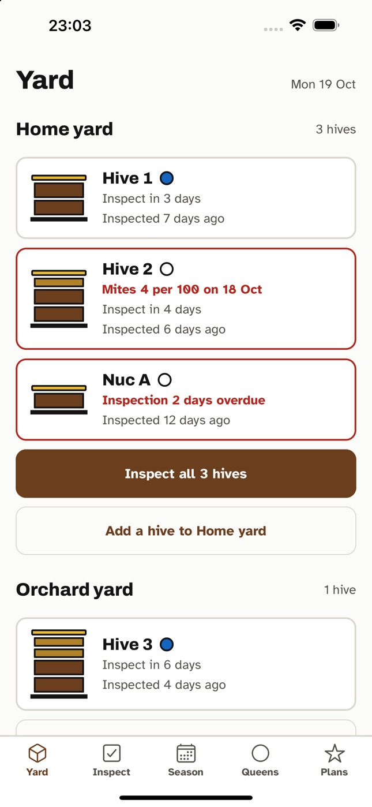
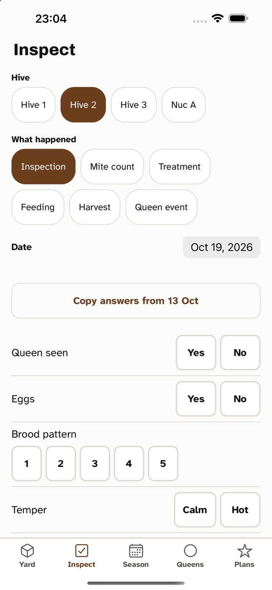
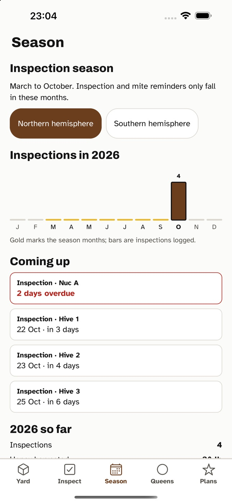
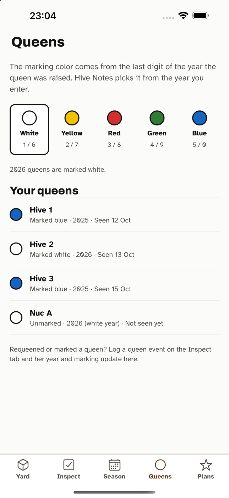

Hive Notes
Log an inspection in under a minute, with gloves on, and see what every hive needs next.
- Queen seenYes
- EggsYes
- Brood pattern4
- Mites per 100 bees4
Every hive, drawn as it stands
Each hive shows its brood boxes and supers, the queen's marking color for her year, and the one or two things that matter now: an overdue inspection, a high mite count, supers off after a treatment.

A one-tap inspection sheet
Big answers you can hit with gloves on. Copy last time's answers and change what's different. Add or pull a super and the drawing changes with it.
Hold the bar to record a voice note while you work. Inspect a whole apiary in one pass, hive after hive.

Reminders that know the season
Inspections every 10 days and mite checks every month, only between March and October (or September to April in the southern hemisphere). Inspect on a different day and the schedule moves with you.

Queens by color
Enter the year she was raised and Hive Notes shows the international marking color. Requeen or mark a queen and her hive updates.

What we promise
- No account needed. Open it and add your first hive.
- Your records stay on your phone, with a daily backup and spreadsheet export any time.
- Unlimited hives and apiaries, free. Features that are free today stay free.
- Pro ($4.99 a month, $39.99 a year, or $99 once) adds sync, sharing with a partner or mentor, season reports and honey sales.